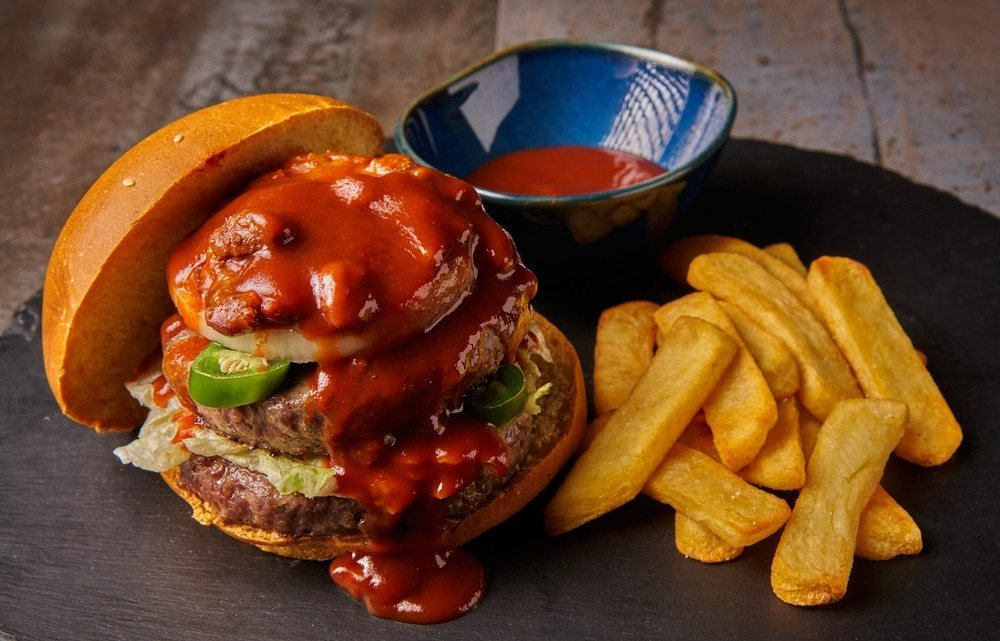

Acompanhamentos
Molho “Furioso”

Ingredientes
- 150 g de ketchup
- 1 dose de vinagre de álcool
- 1 dose de água
- 50 g de xilitol
- 30 g de mostarda
- 1 colher (café) de açafrão, páprica picante e colorau
- Sal a gosto
Modo de preparo
- Coloque todos os ingredientes em uma panela pequena. Misture bem até dissolver o xilitol.
- Leve ao fogo baixo e cozinhe por 5 a 10 minutos, mexendo sempre, até o molho ficar liso e brilhante.
- Desligue o fogo, espere esfriar completamente e guarde no potinho ou na bisnaga.
Observação
Receita de um vídeo do TikTok de @lucaslacerdanutri. A “dose” de vinagre e de água não vem especificada na fonte; ajuste ao gosto.